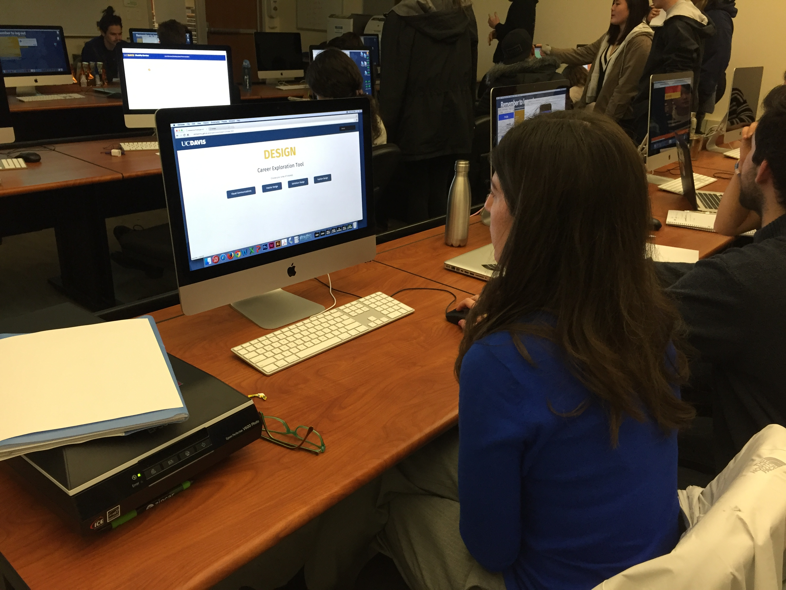

For my user testing, I was fortunate to have 3 users test my site. Going through user testing was a huge learning experience for me. I was able to get feedback both on style and content and also the usability of the site. The users were able to pin point things that I didn't realize before and for the bigger issues I already knew existed, we were able to discuss solutions to move forward with it.
With this user testing experience, I gained many takeaways from my user testers! One of my users suggested that I make the search bar the main highlight of the home page instead of leaving it in the corner. And that way students can type in keywords to search for potential careers. Then another user countered that suggestion by questioning how students will know what keywords to input since this is a tool for them to explore in the first place. The biggest takeaway and issue with my site was my original idea to sort my content in emphasis/interests, but after more research and feedback from my users, it can actually be problematic (specifically for the UC Davis Design Department) to split content based off of categories because (1) what if students go on the site and don't see their category, (2) if the categories are placed in a specific order, students may think why is this first but that last, (3) having narrow categories limits scopes, (4) what if students have a specific career in mind but it doesn't fall under their supposed emphasis, and more. Long story short, categories was not a solution for this site, it could play out to be confusing and too linear, especially since the UC Davis Design Department is trying to stray away from having "emphases" at all. (Which I find very interesting.... like, why...)
Overall, it was great to hear postive feedback as well as things to improve on. They also loved the idea of having a career exploration tool so students can actually start somewhere they know and trust instead of swimming through the large ocean of Google. I was very humbled and thankful for this experience and definitely realized that user testing is more important than a lot of people think it is before rolling out the final product! Actually, there's never a "final" product, they're always changing and improving (haha!). Shout out to Glenda for bringing these wonderful people to class to give us the opportunity to beta test our projects!
